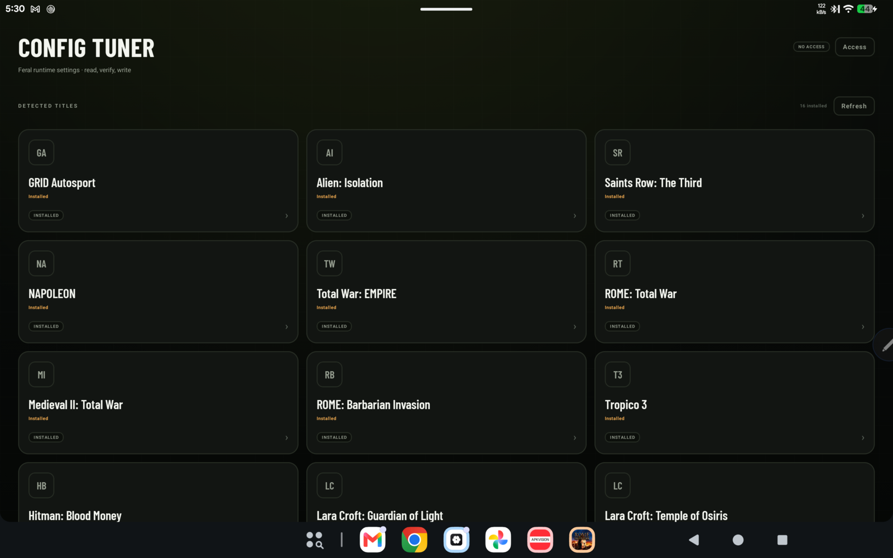
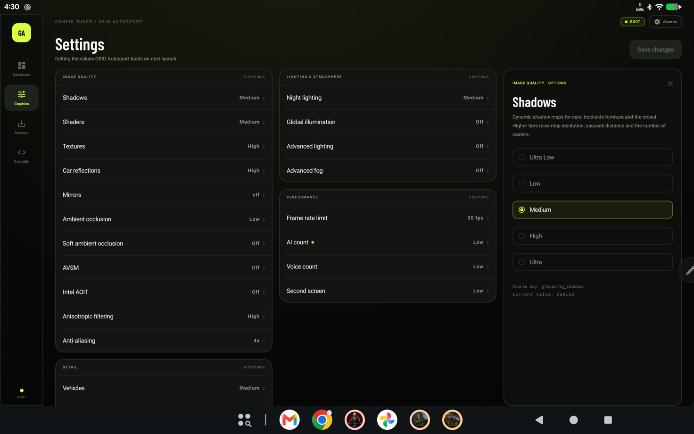
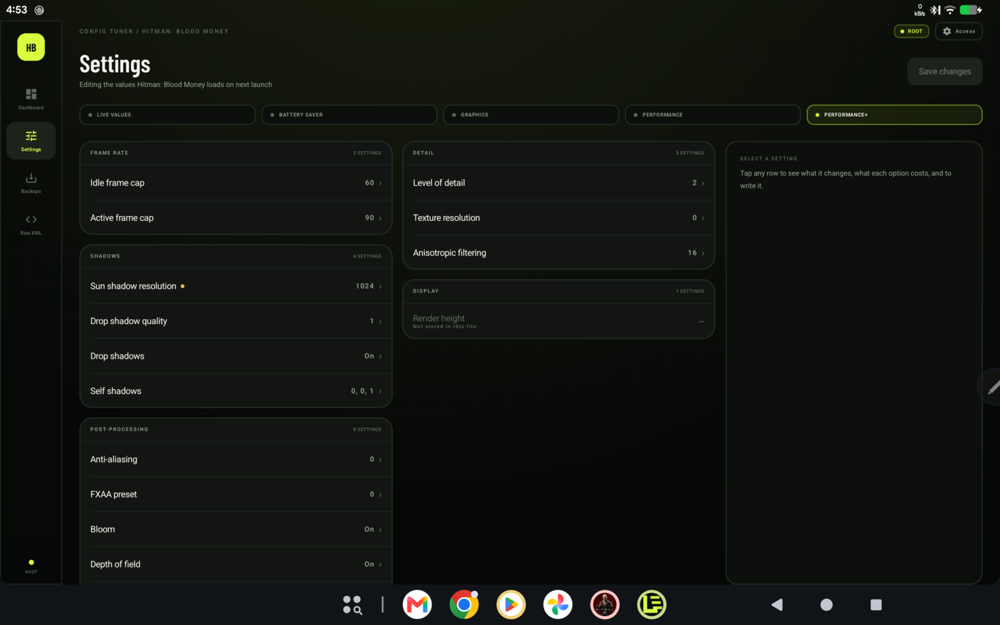
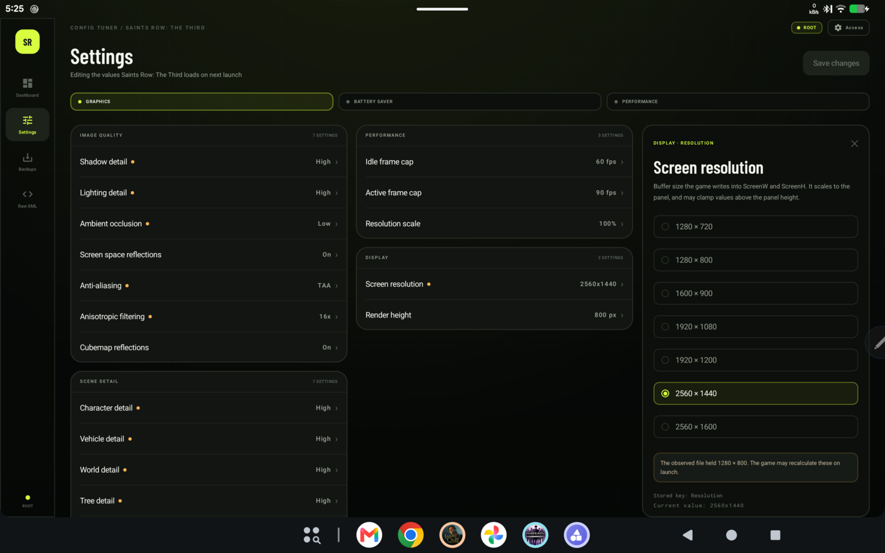

Backup before every save
A copy is written before the file is touched. Each title keeps its own twelve snapshots, and restores are scoped to that title.
Unofficial · Android 8.0+ · 17 titles
Every Feral Android port keeps its real graphics settings in a plaintext registry that Android will not let you open. Config Tuner gives you readable controls for that file — backed up, written back, verified.
v1.2.8 · debug-signed · 10 MB · no network permission

17 titles · 48 unit tests · as of 1.2.8
01 — How it works
Config Tuner does not rewrite the game. It opens the preferences file the game already reads, shows you the keys behind the labels, and writes back only what you asked for.
Installed Feral games are detected by package. A supported title that is not installed can be opened from a saved preferences file.
Android 11 and later block normal apps from other apps' data folders. Root, Shizuku, a manual file copy, or direct access on older Android — that is the honest cost.
Grouped rows in plain language, each with the stored registry key shown for provenance. Preset families stay tabs rather than flattened keys.
The file is validated, backed up, written, read back and parsed. If any step fails, the previous file is restored.
02 — Safety
Editing another app's data is the risk. The app is built around one rule: the previous version of the file always survives a failed save.
A copy is written before the file is touched. Each title keeps its own twelve snapshots, and restores are scoped to that title.
After writing, the app reads the file back and parses it. A successful write is a verified write, not an assumption.
If validation, writing or parsing fails, the previous file is restored. You are told what happened instead of being left with a half-written registry.
03 — Titles
Guided controls differ per title because the registries do. Counts are the number of guided controls Config Tuner ships for that title.
17 of 17 shown
com.feralinteractive.gridlegends_android
com.feralinteractive.gridas
com.feralinteractive.alienisolation_android
com.feralinteractive.saintsrow3_android
com.feralinteractive.napoleon_android
com.feralinteractive.hitmanbloodmoney_android
com.feralinteractive.laracroftgol_android
com.feralinteractive.laracrofttoo_android
com.feralinteractive.railroads_android
com.feralinteractive.tombraider_android
com.feralinteractive.hitmanabsolution_android
com.feralinteractive.companyofheroes_android
com.feralinteractive.empire_android
com.feralinteractive.tropico3
com.feralinteractive.rometw
com.feralinteractive.medieval2_android
com.feralinteractive.rometwbi
No title matches that.
Not listed? The raw XML editor still opens any Feral preferences file you can supply — the guided controls are a convenience, not a wall.
04 — Screenshots
Captured on a Lenovo Yoga Tab Plus TB520FU. No game artwork is used anywhere on this page or in the app.



All four screens are the shipping 1.2.8 interface. Nothing on this page is mocked up.
05 — Install
Config Tuner is distributed as an APK on GitHub Releases. There is no Play Store listing, and the build is debug-signed.
Use the Download APK button on the device that will run the game — not on a desktop, unless you plan to transfer the file.
Android asks you to permit installs from your browser or file manager. This is the standard sideload prompt, not a Config Tuner setting.
Installed Feral games appear as cards. Nothing is written until you press Save.
If Android blocks the data folder, pick Root, Shizuku or a manual file. The screen shows the exact path it expects for the selected title.
| Route | What it needs | Good for | Cost |
|---|---|---|---|
| Root | a rooted device, e.g. KernelSU | direct read/write, no per-file picking | root is a real security decision |
| Shizuku | Shizuku running, started after each reboot | non-root devices that still grant access | a second app and a restart routine |
| Manual file | a copy of the preferences file | any device; saving writes back to that copy | you move the file yourself |
| Direct | older or permissive Android | devices where Android still allows the folder | not available on Android 11+ |
06 — Questions
Android 11 and later stop normal apps from reading other apps' Android/data
folders, which is where every Feral port stores its registry. Root and Shizuku both give the
app the file access Android otherwise refuses. If neither is available, the manual-file
route copies the file out and writes it back.
The app never touches anything except the preferences file for the title you selected. It backs the file up before writing, verifies the write, and restores the backup if anything fails. It has no network permission, so it cannot upload your files. The remaining risk is the same as editing the file by hand — which is what it replaces.
The registry schema can change between game versions. The app shows keys that are absent from your file as “Not stored in this file” instead of inventing them, and the raw XML editor remains available. After a large game update, re-check the settings you rely on.
The project is built and released outside Google Play, so it uses a debug signature rather than a Play signing key. Android will warn you, and Play Protect may prompt. The package name stays the same between releases so updates install over the previous one.
No. The manifest has no network permission, and there is no analytics, telemetry or crash reporting. Nothing leaves the device.
Open the preferences file with the raw XML editor. Guided controls exist only for the seventeen titles the catalogue covers. A game that is not listed may still work through the raw editor, and its keys may not be documented.
Formerly Legend Tuner, which edited GRID Legends only. Version 1.2.x keeps the same package identity and adds sixteen more titles.